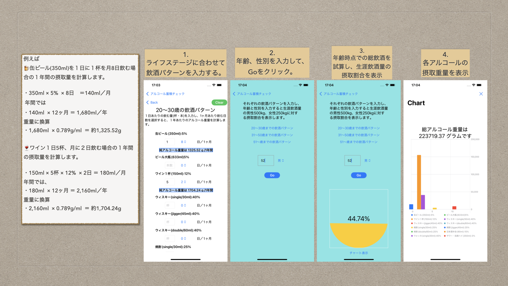

アルコール摂取量 試算アプリの概要
ライフステージにおける飲酒パターンを入力して、 年齢時点の生涯飲酒量に対する割合を試算できます。
写真で綴る日記の概要
３ステップで写真日記を完成します。
完全にローカルでオフラインで使用できるモバイルデータベースRealmで構築していますので、
インターネット接続を必要とせず動作も高速です。
使い方はシンプル
◇日記は最新日時がリストのTopに、古い日記はスクロールして見る。
◇日付フィルターで、その日だけの日記の抽出も可能。
◇リストの日記を左にスワイプで、削除ボタンが表示、いらない日記は削除可能。
編集機能はオプションです、購入の検討をお願いします。
◇編集機能は、文章の変更とお気に入り登録が可能。
お気に入り登録したら、メイン画面のお気に入り検索が可能。